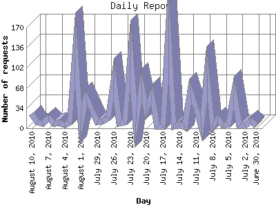

The Daily Report identifies the activity for each day within the reporting period. Remember that one page hit can result in several server requests as the images for each page are loaded.

| Day | Number of requests | Number of page requests | |
|---|---|---|---|
| 1. | June 30, 2010 | 5 | 5 |
| 2. | July 1, 2010 | 13 | 3 |
| 3. | July 2, 2010 | 5 | 1 |
| 4. | July 3, 2010 | 5 | 4 |
| 5. | July 4, 2010 | 60 | 18 |
| 6. | July 5, 2010 | 7 | 1 |
| 7. | July 6, 2010 | 5 | 2 |
| 8. | July 7, 2010 | 16 | 9 |
| 9. | July 8, 2010 | 3 | 3 |
| 10. | July 9, 2010 | 93 | 17 |
| 11. | July 10, 2010 | 2 | 2 |
| 12. | July 11, 2010 | 34 | 16 |
| 13. | July 12, 2010 | 63 | 8 |
| 14. | July 13, 2010 | 2 | 0 |
| 15. | July 14, 2010 | 7 | 2 |
| 16. | July 15, 2010 | 3 | 2 |
| 17. | July 16, 2010 | 161 | 27 |
| 18. | July 17, 2010 | 4 | 3 |
| 19. | July 18, 2010 | 4 | 3 |
| 20. | July 19, 2010 | 57 | 7 |
| 21. | July 20, 2010 | 31 | 8 |
| 22. | July 21, 2010 | 72 | 7 |
| 23. | July 22, 2010 | 9 | 6 |
| 24. | July 23, 2010 | 125 | 12 |
| 25. | July 24, 2010 | 10 | 2 |
| 26. | July 25, 2010 | 8 | 4 |
| 27. | July 26, 2010 | 83 | 7 |
| 28. | July 27, 2010 | 17 | 5 |
| 29. | July 28, 2010 | 12 | 2 |
| 30. | July 29, 2010 | 11 | 2 |
| 31. | July 30, 2010 | 31 | 15 |
| 32. | July 31, 2010 | 52 | 4 |
| 33. | August 1, 2010 | 8 | 4 |
| 34. | August 2, 2010 | 133 | 17 |
| 35. | August 3, 2010 | 9 | 3 |
| 36. | August 4, 2010 | 6 | 2 |
| 37. | August 5, 2010 | 9 | 1 |
| 38. | August 6, 2010 | 8 | 6 |
| 39. | August 7, 2010 | 17 | 4 |
| 40. | August 8, 2010 | 8 | 7 |
| 41. | August 9, 2010 | 10 | 5 |
| 42. | August 10, 2010 | 25 | 8 |
Most active day March 13, 2010 : 67 pages sent. 161 requests handled.
Daily average: 6 pages sent. 29 requests handled.
This report was generated on August 11, 2010 12:12.
Report time frame January 31, 2010 00:52 to August 10, 2010 21:27.
| Web statistics report produced by: analog 6.0 / Report Magic 2.21 |